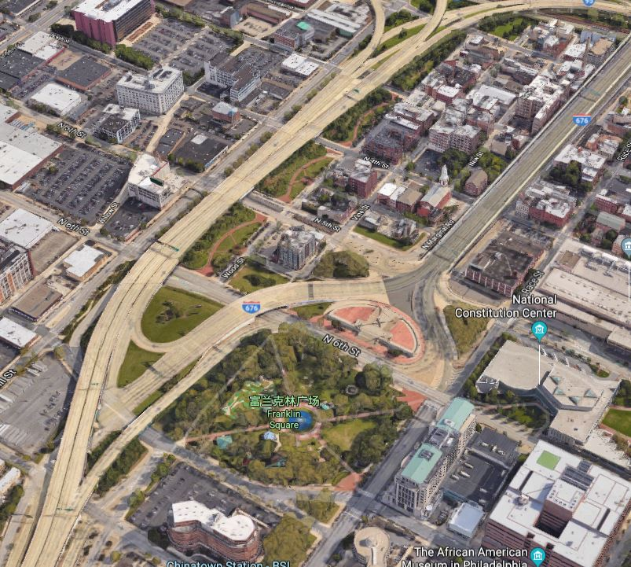

As you can see, Philadelphia has lots of GSI installed in the city. GSI, which refers to Green Stormwater Infrastructure, plays an important role in relieving the pressure of dealing with flood and stormwater. Some infrastructures, such as raingarden and wedland, are spceial ecosystems in the city, which enrich urban ecosystem and are good places for citizens to have fun. Thus I choose the topic of grenn infrastrure to tell municipality where new GSIs could be installed.
From the location map we can see, even though GSIs has distributed all around the city of Philadelphia, the central city area own only few of them. Due to the land use intensity and vertical development, many types of GSI are unable to be constructed, such as retention pool or raingardens. Besides, central city has few parks that have some functions that are similar to GSI such as linear green space that surround Fraklin Square, but are not counted as a GSI. In other areas, GSIs distribute evenly, especially among residential neighborhoods.
Even though there is abundant number of GSIs planned in the whole city, many of them are still in construction. Since the idea of GSI haven't get popular until recent years and the city has limited budget to build too many at the same time, only a few of GSIs are completed or are substantially constructed. This means that in most places, we don't know when these GSIs will be realized and function to help the city.
Besides, we are also taking a look at two important types of GSI, which are raingarden and infiltration trench. Based on the map, the construction of raingardens in Philadelphia is not as positive as in other cities. The southern part of the city, which is vulnerable to flood according to FEEMA's stuty, is actually lacking raingardens to store ground runoffs caused by storm or flood. Considering the high cost of building new parks, it is appropriate to renovate parks in southern Philadelphia.
The distribution of infiltration trenches also display a really awkward unevenness. Central city area has the highest ratio of land covered by pavement that is impervious, but it has only few infiltration trenches. Even though this area has a denser distribution of sewerage pipes, having infiltration trenches accelerates the output of stormwater, which partly ease the ground runoff in the area.
In short, the blueprint of GSI that the municipality of Philadelphia drew is optimistic, but the city really need investment and should take special attention to evenness with different areas.